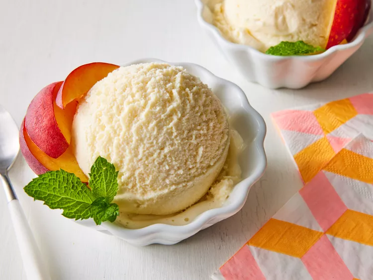

Peach Ice Cream

Description
This peach ice cream is easy to make at home and the best you'll ever eat!
Ingredients
- 2 ½ pounds fresh peaches - peeled, pitted and chopped
- 1 pint half-and-half cream
- ½ cup white sugar
- 1 (14 ounce) can sweetened condensed milk
- 1 (12 fluid ounce) can evaporated milk
- 1 teaspoon vanilla extract
- 2 cups whole milk, or as needed
Steps
- Gather all ingredients.
- Working in batches, purée peaches with half-and-half and sugar in a blender or food processor.
- Mix peach mixture, sweetened condensed milk, evaporated milk, and vanilla in a gallon ice cream freezer container. Pour enough whole milk into the container to reach the fill line, about 2 cups. Pour mixture into an ice cream maker.
- Mix peach mixture, sweetened condensed milk, evaporated milk, and vanilla in a gallon ice cream freezer container. Pour enough whole milk into the container to reach the fill line, about 2 cups. Pour mixture into an ice cream maker.